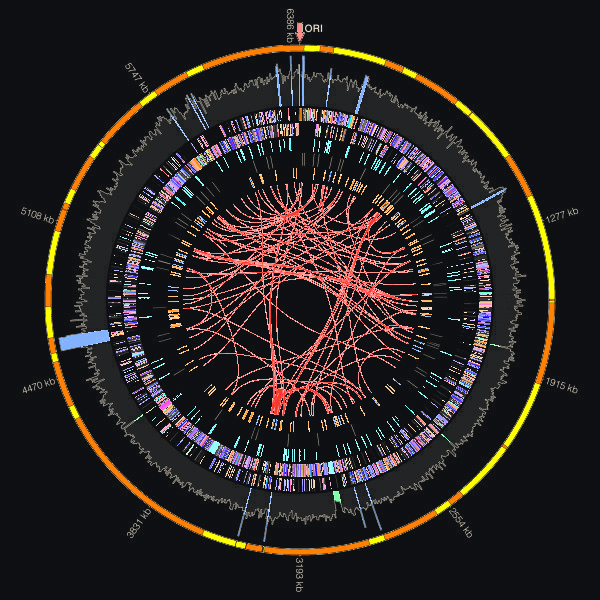
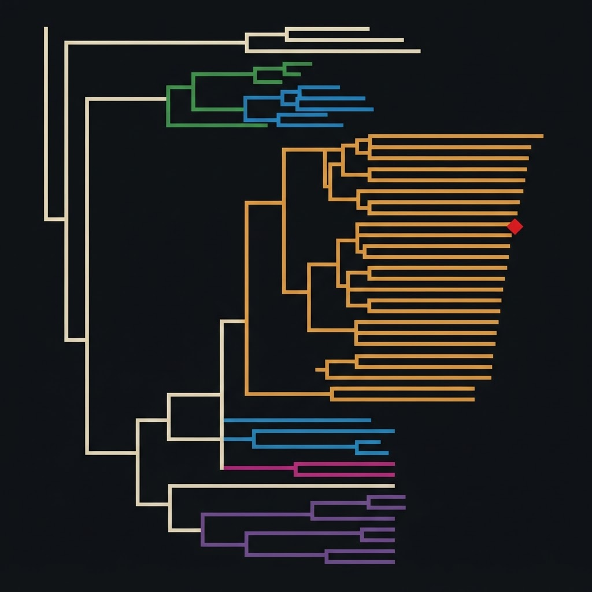
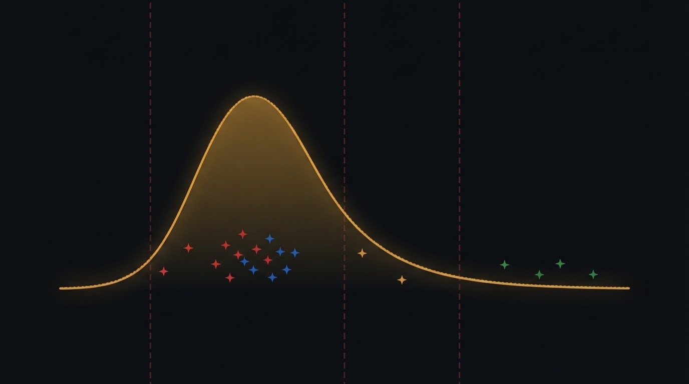
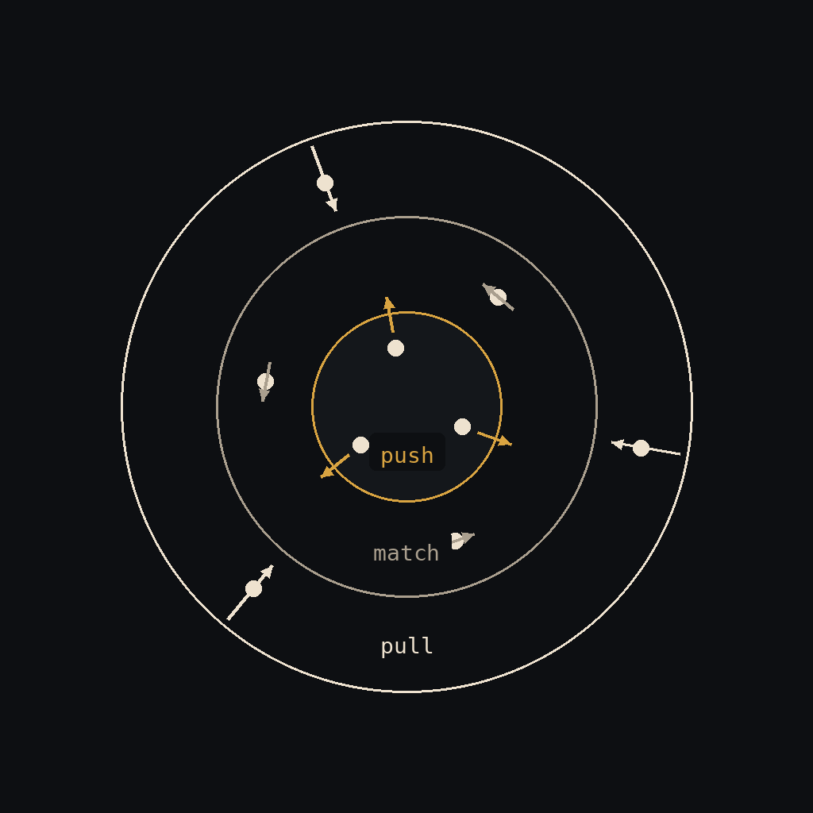
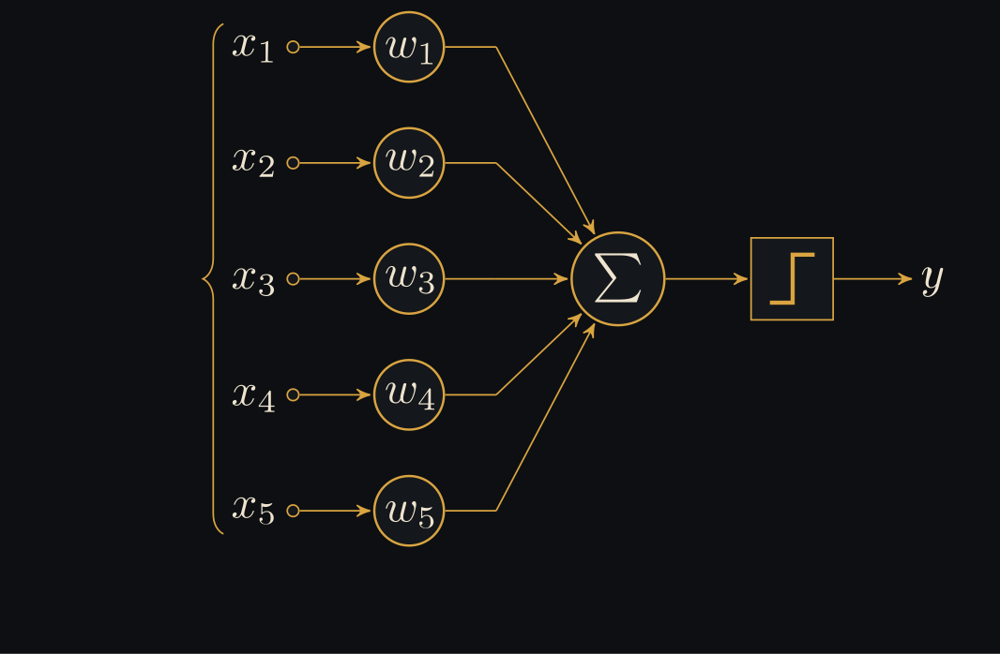
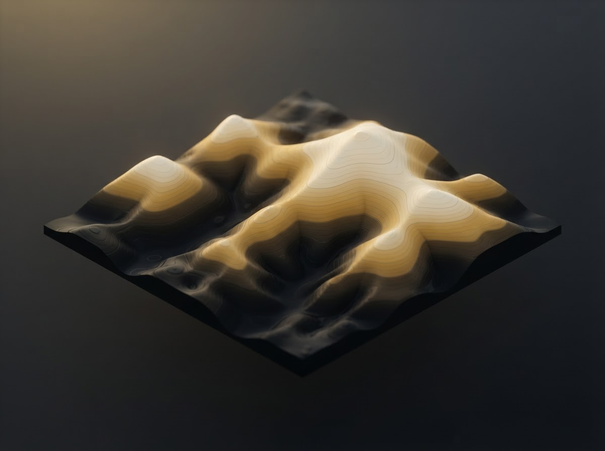
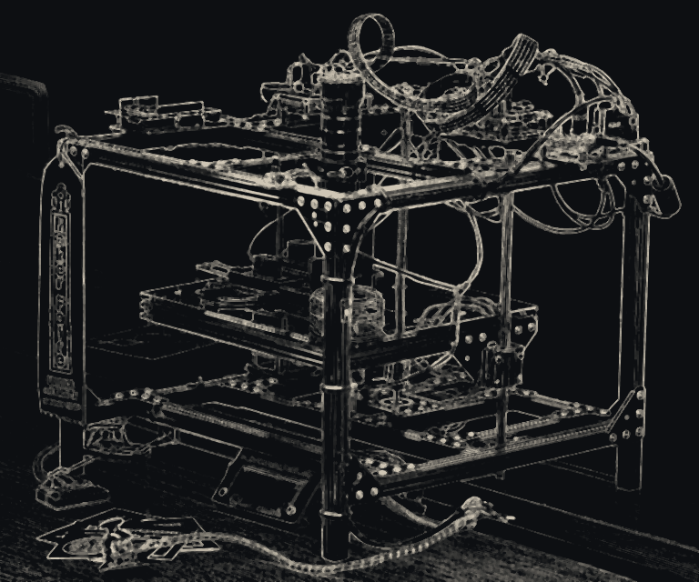
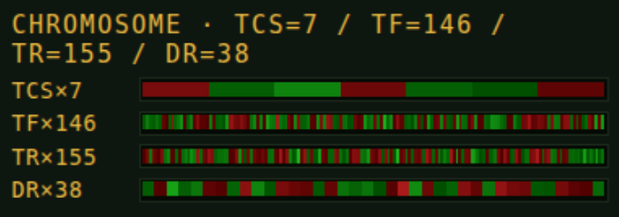
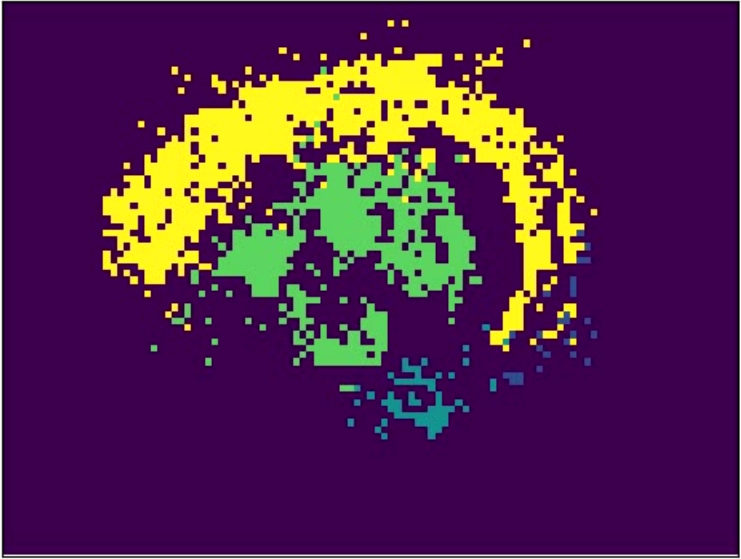

1
Smartest bacterial genome on Earth?

P.1 Figure 3.
Paenibacillus vortex, currently holds the title of smartest microbe on Earth (to learn more see P.1).
Every theory, hypothesis, idea, speculation ... is a deck of cards.

P.1 Figure 3.
Paenibacillus vortex, currently holds the title of smartest microbe on Earth (to learn more see P.1).

P.1 - Fig. 2A
Near by genomes such as Paenibacillus lautus (seen here on the Ancient datagram) and others are equally smart, or maybe smarter than Paenibacillus vortex. P.1 makes its call but it is a close one.

P.1 - Fig. 4A-D's combined score
Combined score IQ on the x axis, distribution of bacteria plotted - smart microbes are on the right tail of the distribution.

P.2 - Fig. 3
The emergence of collective swarming behavior can be modeled as the boid interaction (Craig Reynolds, 1986) which is a computer science equivalent of the physicist's Vicsek model (Tamas Vicsek, 1995)

Contracted: perceptron, math labels only, in the tones of the page - after Perceptrón 5 unidades (Alejandro.cartas), Wikimedia Commons, CC BY-SA 4.0.
P.2 - Fig. 2
Inspired by my work on bacterial cognition. https://www.pnas.org/doi/10.1073/pnas.0507438103

Contracted: Sewall Wright adaptive landscape, rendered in the tones of the deck.
P.2 - Fig. 5B
An arena where landscape ecology takes place. Inspired by modeling a terrain to implement Sewall Wright's idea of an adaptive landscape: https://www.pnas.org/doi/10.1073/pnas.0607971103 - we moved to discrete CA based models more in the line of metapopulations in dynamic landscapes: https://www.journals.uchicago.edu/doi/abs/10.1086/303407

Biotexturas lab
The ALife Ecology simulation is the R.AI's model of her own compute. An hybrid machine that eventually (once built) includes the TerraVerse, a DePIN of TerraScopes. A meta instrument we use to unravel collective intelligence together. A TerraScope machine is the key hardware entry point to co-build the DePIN and co-write the web3 story. This completes the R.AI.'s research lab: an IRL lab (TerraScope-w-HRM) and an ALife simulation one (ALife Ecology).

Biotexturas lab
ALife genome-to-phenotype mapping. Local demographics, terrain, and Genetic Algorithm's (GA) adaptation (based on https://onlinelibrary.wiley.com/doi/epdf/10.1002/cplx.21392).

Biotexturas lab
Drone Activate. Ancient datagram composed using an optical flow and a cluster analysis computer vision pipeline applied to a time lapse captured by TerraScope. In the datagram, we can see the robotic shifting of TerraScope’s XY stage while the computer vision machine is tracking an emitted ArrowHead and snakes morphs of P. lautus.